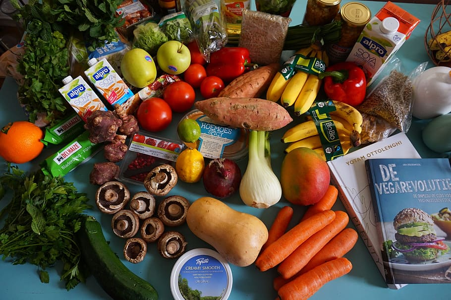
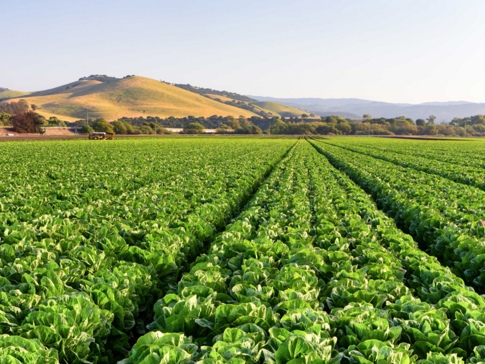
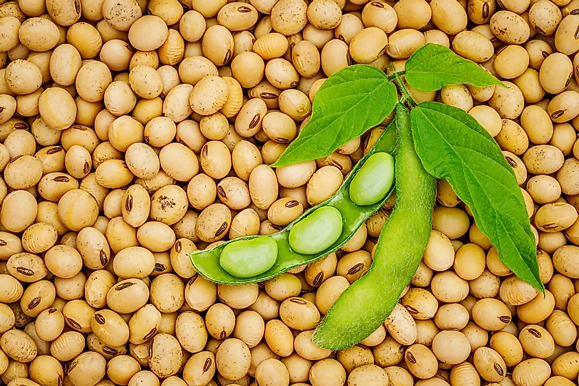

• Ser vegetariano é não ter a inclusão de qualquer tipo de carne que seja de origem animal no dia a dia;
• Ingerir carnes contribui para a criação de pastos e incentiva o desmatamento para abrir mais campos de cultivo de soja (maior ingrediente para a ração do gado) em locais naturais;
• Ter uma dieta vegetariana ajuda a reduzir os desastres naturais e alterações climáticas, além de trazer mais segurança alimentar para o futuro;
• A pecuária é um dos maiores culpados pelos problemas ambientais, pois é muito poluidor e pode causar altos prejuízos às plantas e animais;
• O vegetarianismo é uma solução para a preservação da natureza e para uma vida longa mais saudável.
Soja, boa ou ruim?
Lados positivos da soja
• Ser um grão altamente versátil na indústria, pode ser utilizada de diversas formas além do uso alimentício;
• A proteína da soja é equivalente à proteína animal e por isso é a única do reino vegetal que consegue substituí-las no ponto de vista nutricional, pois contém todos nutrientes necessários na proporção certa, e em quantidade adequada.
Lados negativos da soja
• É ruim por utilizar métodos não benéficos para o meio ambiente em sua produção como: a monocultura, agrotóxicos (fazem mal para a nossa saúde também), modificação genética e diversos outras técnicas de beneficiamento;
• A alta produção da soja transgênica beneficia apenas os grandes agricultores, deixando agricultores orgânicos e os pequenos produtores fragilizados, consequentemente o preço dos alimentos produzidos sem a tecnologia se torna maior do que o convencional.
Orgânicos, bem estar
• Alimentos orgânicos incluindo a soja orgânica, são mercadorias produzidas sem a adição de agrotóxicos, fertilizantes, pesticidas e etc. Isso quer dizer que esse tipo de produto não possui adubos químicos ou venenos que pode vir a prejudicar sua saúde e metabolismo.
• A agricultura orgânica é também uma alternativa mais favorável ao meio ambiente, diferentemente da tradicional ou da transgênica, pois trabalha em conjunto com a natureza favorecendo a conservação do solo, a rotação de culturas, diminuindo as diversas formas de poluição agrícola e preservando o bem estar da fauna.
• Os produtos orgânicos encontrados no Brasil são fabricados em sua maioria por médios e pequenos produtores, o que faz fomentar a agricultura familiar, a cultura e a parte socioeconômica da produção.
Influência do vegetarianismo
• Ser vegetariano é não ter a inclusão de qualquer tipo de carne que seja de origem animal no dia a dia;
• Ingerir carnes contribui para a criação de pastos e incentiva o desmatamento para abrir mais campos de cultivo de soja (maior ingrediente para a ração do gado) em locais naturais;
• Ter uma dieta vegetariana ajuda a reduzir os desastres naturais e alterações climáticas, além de trazer mais segurança alimentar para o futuro;
• A pecuária é um dos maiores culpados pelos problemas ambientais, pois é muito poluidor e pode causar altos prejuízos às plantas e animais;
• O vegetarianismo é uma solução para a preservação da natureza e para uma vida longa mais saudável.
Onde acho produtos orgânicos?
• É possível encontrar os produtos orgânicos em diversos lugares como mercados ou até feiras destinadas unicamente à esse tipo de alimento, podendo identificá-los através do selo orgânico. Abaixo estão dois sites em que você pode adquirí-los sem sair do conforto na sua rotina!
http://www.ccabc.com.br/
https://feirasorganicas.org.br/